Reduction of Multiple Subsystems
Control 5
Imron Rosyadi
Reduction of Multiple Subsystems
Block Diagrams, Signal-Flow Graphs, and Mason’s Rule
Learning Objectives
After this session, you will be able to:
- Reduce a multi-block diagram into a single transfer function using block diagram algebra.
- Recognize and use the cascade, parallel, and feedback interconnection forms.
- Use block moves (across summing junctions and pickoff points) to reveal familiar forms.
- Convert block diagrams ↔︎ signal‑flow graphs.
- Compute a system transfer function using Mason’s Rule.
- Analyze and design second‑order feedback systems built from multiple subsystems (overshoot, settling time, etc.).
5.1 Why Reduce Multiple Subsystems?
We start with subsystems:
- Each subsystem: a block with input, output, and transfer function.
- Real systems: many subsystems interconnected.
Goal:
- Replace the whole interconnection by one equivalent transfer function from input to output.
- Then we can:
- Apply transient-analysis formulas.
- Study stability (poles).
- Design gains and compensators.
Block diagrams vs. signal-flow graphs
- Block diagrams
- Blocks + summing junctions + pickoff points.
- Common in frequency-domain analysis & design.
- Signal‑flow graphs
- Nodes = signals.
- Directed branches = transfer functions.
- Very convenient for state‑space and for using Mason’s Rule.
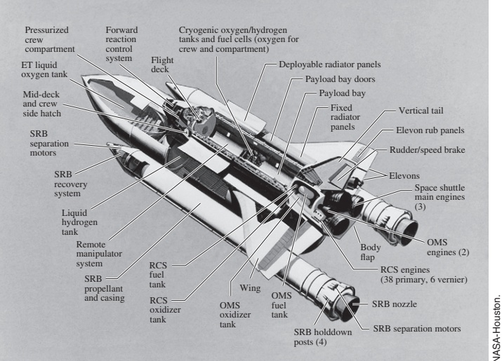
Block Diagram Elements (LTI Systems)
All basic block diagram components:
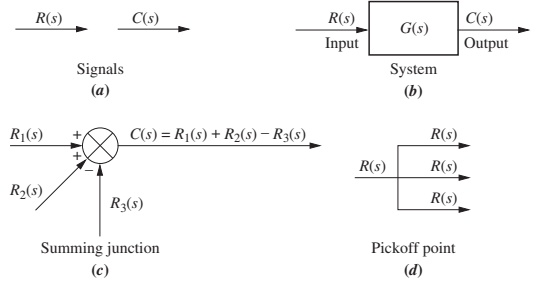
- Blocks: systems / subsystems with transfer function.
- Summing junctions: algebraic sum of inputs.
- Pickoff points: copy a signal undiminished to multiple locations.
5.2 Basic Interconnection Forms
We focus on three fundamental interconnections:
- Cascade (series)
- Parallel
- Feedback
Every complicated block diagram can be reduced by repeatedly:
- Recognizing pieces in one of these forms.
- Replacing that piece with its equivalent single block.
Note
If you can reduce cascade, parallel, and feedback, and you know how to move blocks, you can handle almost any linear block diagram.
Cascade Form – Concept
Cascaded subsystems:
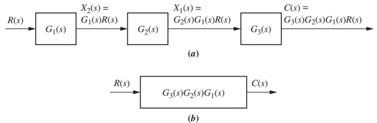
Given:
- Subsystems \(G_1(s), G_2(s), G_3(s)\) in series.
Equivalent transfer function:
\[ G_e(s) = G_3(s)\,G_2(s)\,G_1(s) \]
(assuming no loading between stages).
Analogy (ECE hardware):
- Series of gain stages in an amplifier chain.
- A digital filter realized as cascaded biquad sections.
Cascade Form – When Loading Breaks It
RC networks illustrate loading:
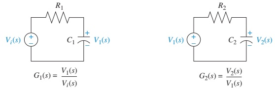
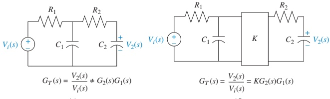
For each isolated network:
First RC: \[ G_1(s) = \frac{V_1(s)}{V_i(s)} = \frac{\frac{1}{R_1 C_1}}{s + \frac{1}{R_1 C_1}} \]
Second RC: \[ G_2(s) = \frac{V_2(s)}{V_1(s)} = \frac{\frac{1}{R_2 C_2}}{s + \frac{1}{R_2 C_2}} \]
If we naively cascade:
\[ G_{\text{naive}}(s) = G_2(s)G_1(s) = \frac{\frac{1}{R_1 C_1 R_2 C_2}}{s^2 + \left(\frac{1}{R_1 C_1} + \frac{1}{R_2 C_2}\right)s + \frac{1}{R_1 C_1 R_2 C_2}} \]
But the true transfer function (from circuit analysis) is:
\[ G(s) = \frac{V_2(s)}{V_i(s)} = \frac{\frac{1}{R_1 C_1 R_2 C_2}}{s^2 + \left(\frac{1}{R_1 C_1} + \frac{1}{R_2 C_2} + \frac{1}{R_2 C_1}\right)s + \frac{1}{R_1 C_1 R_2 C_2}} \]
They are not equal: extra term \(\frac{1}{R_2 C_1}\) appears due to loading.
Important
Block diagram algebra assumes no loading between blocks. If electrical loading exists, you must include it in the model.
Preventing Loading – Buffering
- Amplifier/buffer between RC networks:
- High input impedance ⇒ does not load previous stage.
- Low output impedance ⇒ drives next stage like an ideal source.
Then:
\[ G_{\text{eq}}(s) = K\,G_2(s)G_1(s) \]
where \(K\) is the amplifier gain.
Parallel Form
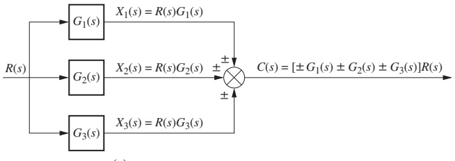
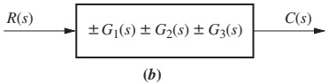
Parallel subsystems:
- Same input goes to each block.
- Outputs are algebraically summed.
Equivalent transfer function:
\[ G_e(s) = \pm G_1(s) \pm G_2(s) \pm G_3(s) \]
(plus/minus depending on summing junction signs).
Real ECE example:
- Two sensor paths (e.g., high‑frequency and low‑frequency channels) summed to form one control input.
Feedback Form – The Core Control Topology
Typical feedback control system:
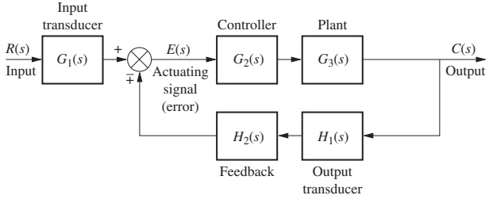
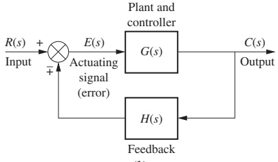
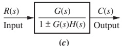
FIGURE 5.6 – (a) Complete feedback system, (b) simplified, (c) equivalent transfer function.
From simplified model:
Error: \[ E(s) = R(s) \mp C(s)H(s) \]
Output: \[ C(s) = G(s)E(s) \]
Eliminate \(E(s)\):
\[ E(s) = \frac{C(s)}{G(s)} \]
Substitute:
\[ \frac{C(s)}{G(s)} = R(s) \mp C(s)H(s) \]
Solve for \(C(s)/R(s)\):
\[ G_e(s) = \frac{C(s)}{R(s)} = \frac{G(s)}{1 \pm G(s)H(s)} \]
The product \(G(s)H(s)\) is the open-loop transfer function or loop gain.
Moving Blocks – Why It Matters
Complex diagrams rarely show clean cascade/parallel/feedback chunks.
We must move blocks across:
- Summing junctions
- Pickoff points
…to expose:
- Pure cascade segments
- Pure parallel segments
- Standard feedback loops
Key idea:
- You may rearrange a block diagram as long as the input–output relationship remains identical.
Warning
If you move a block incorrectly, you change the system. Always verify equivalence by writing expressions for intermediate signals.
Moving Blocks Across Summing Junctions
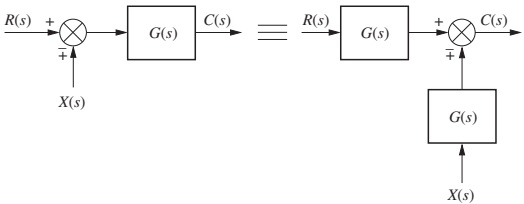
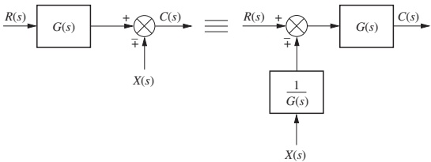
- Figure 5.7(a): moving G(s) left across a summing junction that feeds it.
- Figure 5.7(b): moving G(s) right across a summing junction.
In both cases, verify:
- If both \(R(s)\) and \(X(s)\) are multiplied by \(G(s)\) before contributing to the output, the two diagrams are equivalent.
Mathematically, for 5.7(a):
\[ C(s) = [R(s) \mp X(s)]\,G(s) = R(s)G(s) \mp X(s)G(s) \]
Same result for the rearranged diagram.
Moving Blocks Across Pickoff Points
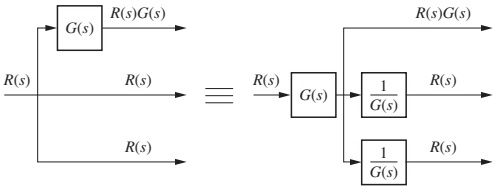
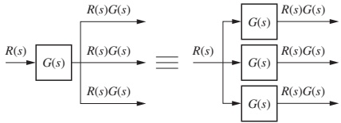
- Move block before or after the pickoff, if:
- All branches from the pickoff see the appropriate transformation.
Example reasoning:
- If output branches need the same scaled signal \(G(s)R(s)\), you can move \(G(s)\) before the pickoff.
- If only one branch needs scaling, \(G(s)\) must stay on that branch.
Example 5.1 – Block Diagram Reduction via Familiar Forms
Problem: Reduce the block diagram in Figure 5.9 to a single transfer function.
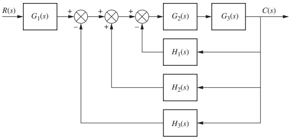
Example 5.1 – Step 1: Collapse Summing Junctions
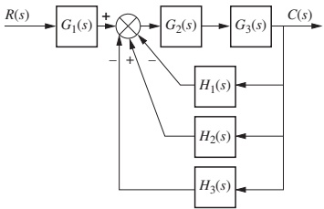
- Multiple summing junctions in series can be combined into one junction whose inputs are the algebraic sum of all original inputs.
Example 5.1 – Step 2: Cascade and Parallel Recognition
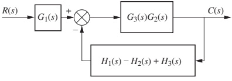
Recognize:
Forward path: \(G_2(s)\) and \(G_3(s)\) in cascade: \[ G_{\text{forward}}(s) = G_3(s)G_2(s) \]
Feedback path: \(H_1(s), H_2(s), H_3(s)\) in parallel: \[ H_{\text{eq}}(s) = H_1(s) - H_2(s) + H_3(s) \]
Example 5.1 – Step 3: Final Reduction
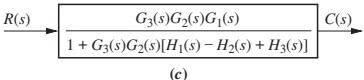
- Overall feedback loop: forward path \(G_3 G_2\), feedback \(H_{\text{eq}}\).
Closed-loop equivalent:
\[ \text{Inner loop:}\quad G_{\text{CL}}(s) = \frac{G_3(s)G_2(s)}{1 + G_3(s)G_2(s)\,H_{\text{eq}}(s)} \]
Then cascade with \(G_1(s)\):
\[ T(s) = \frac{C(s)}{R(s)} = G_1(s) \cdot G_{\text{CL}}(s) \]
Example 5.2 – Block Diagram Reduction by Moving Blocks
Problem: Reduce the system in Figure 5.11 to a single transfer function.
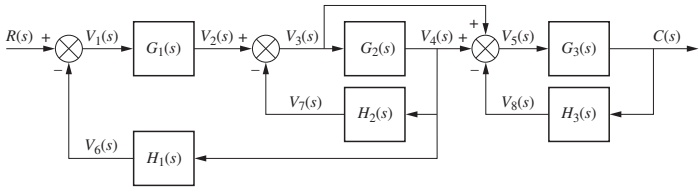
This diagram is too tangled to reduce directly. We will:
- Move blocks across pickoffs.
- Create parallel pairs and simpler feedback loops.
- Successively apply cascade/parallel/feedback reductions.
Example 5.2 – Reduction Steps (Visual Walkthrough)
We only sketch the key steps; the textbook has full details.
- Move \(G_2(s)\) left past the pickoff; reduce the feedback loop with \(G_3(s)\) and \(H_3(s)\).
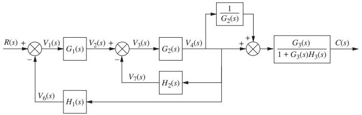
- Reduce parallel pair \(1/G_2(s)\) and unity; move \(G_1(s)\) right past summing junction.
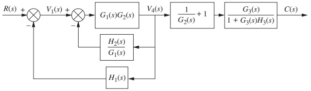
- Collapse summing junctions, combine cascaded blocks, and sum feedback paths.
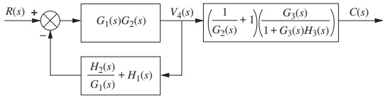
- Apply feedback formula to get:
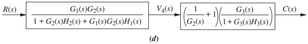
- Final cascade multiplication yields the single equivalent transfer function:
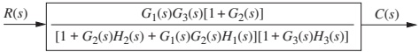
FIGURE 5.12 – Steps in the block diagram reduction for Example 5.2.
Skill-Assessment Exercise 5.1 (Concept Check)
Problem: Find equivalent transfer function \(T(s) = C(s)/R(s)\) for the system in Figure 5.13.
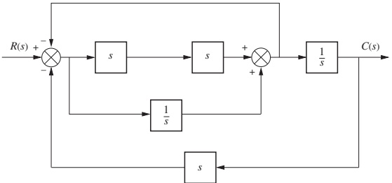
Given answer:
\[ T(s) = \frac{s^{3} + 1}{2s^{4} + s^{2} + 2s} \]
Tip
Use this as a self-check:
- Try to re-derive \(T(s)\) by systematically using cascade, parallel, and feedback reductions.
- Compare your expression with the given result.
5.3 Feedback Systems – From Structure to Transient Specs
Immediate application:
- Systems that reduce to second-order closed-loop forms.
- Use classic formulas for:
- Percent overshoot (%OS)
- Settling time \(T_s\)
- Peak time \(T_p\)
- Rise time \(T_r\)
Consider system:
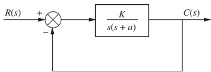
Closed-loop transfer function:
\[ T(s) = \frac{K}{s^{2} + a s + K} \]
Here:
- \(K\): overall gain (e.g., amplifier gain).
- \(a\): coefficient related to damping (e.g., friction, resistance).
Pole Locations vs. Gain K
Poles of closed-loop system:
For \(0 < K < a^2/4\): real, distinct (overdamped). \[ s_{1,2} = -\frac{a}{2} \pm \frac{\sqrt{a^{2} - 4K}}{2} \]
For \(K = a^2/4\): real, equal (critically damped).
For \(K > a^2/4\): complex conjugate (underdamped). \[ s_{1,2} = -\frac{a}{2} \pm j\frac{\sqrt{4K - a^{2}}}{2} \]
For underdamped case:
- Real part fixed at \(-a/2\).
- Imaginary part increases with \(K\).
- Implications:
- Peak time \(T_p\) decreases (faster oscillations).
- Percent overshoot increases (more oscillatory).
- Settling time roughly constant (since real part fixed).
Important
Gain \(K\) trades off speed vs. overshoot. Design is about choosing \(K\) to satisfy both.
Example 5.3 – Finding Transient Response
Problem: For system in Figure 5.15, find \(T_p\), %OS, and \(T_s\).
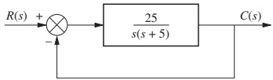
Closed-loop transfer function:
\[ T(s) = \frac{25}{s^{2} + 5s + 25} \]
Compare with standard 2nd-order form:
\[ T(s) = \frac{\omega_n^{2}}{s^{2} + 2\zeta\omega_n s + \omega_n^{2}} \]
Identify:
- \(\omega_n^2 = 25 \Rightarrow \omega_n = 5\).
- \(2\zeta \omega_n = 5 \Rightarrow 2\zeta(5) = 5 \Rightarrow \zeta = 0.5\).
Now apply standard formulas:
Peak time \[ T_p = \frac{\pi}{\omega_n \sqrt{1-\zeta^{2}}} = 0.726 \text{ s} \]
Percent overshoot \[ \%OS = e^{-\zeta\pi/\sqrt{1-\zeta^{2}}} \times 100 = 16.3\% \]
Settling time (2% criterion) \[ T_s = \frac{4}{\zeta\omega_n} = 1.6 \text{ s} \]
Example 5.4 – Gain Design for Transient Response
Problem: For system in Figure 5.16, choose gain \(K\) so that step response has 10% overshoot.
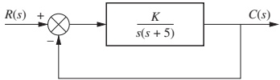
Closed-loop transfer function:
\[ T(s) = \frac{K}{s^{2} + 5s + K} \]
Identify standard form:
- \(\omega_n^2 = K \Rightarrow \omega_n = \sqrt{K}\)
- \(2\zeta\omega_n = 5 \Rightarrow 2\zeta\sqrt{K} = 5 \Rightarrow \zeta = \dfrac{5}{2\sqrt{K}}\)
Percent overshoot depends only on \(\zeta\):
\[ \%OS = e^{-\zeta\pi/\sqrt{1-\zeta^{2}}}\times 100 \]
For \(\%OS = 10\%\), from standard tables or solving numerically: \(\zeta \approx 0.591\).
Set \(\zeta = 5/(2\sqrt{K}) = 0.591\):
\[ \sqrt{K} = \frac{5}{2\zeta} \approx \frac{5}{2 \times 0.591} \approx 2.667 \]
\[ K \approx 2.667^2 \approx 17.9 \]
So design result:
- Gain \(K \approx 17.9\) gives 10% overshoot.
Tip
This is a typical design workflow: Desired %OS → \(\zeta\) → \(K\) from the denominator coefficients.
5.4 Signal-Flow Graphs – Another Representation
Key differences from block diagrams:
- Only nodes and directed branches:
- Node = signal.
- Branch = system/transfer function.
- Summation is implicit at each node:
- Node value = algebraic sum of incoming signals.
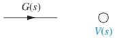
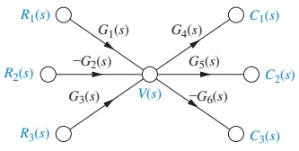
Example node equation from Figure 5.17(c):
\[ V(s) = R_1(s)G_1(s) - R_2(s)G_2(s) + R_3(s)G_3(s) \]
Note: negative input is modeled by negative branch gain (e.g., \(-G_2(s)\)), not by a separate summing junction.
Note
Signal-flow graphs are especially convenient:
- For state‑space (each state is a node).
- For using Mason’s Rule to find transfer functions.
From Block Diagrams to Signal-Flow Graphs
Example 5.5: Convert basic block forms (cascade, parallel, feedback) into signal-flow graphs.
Strategy:
- Draw signal nodes for each intermediate signal.
- Connect nodes with directed branches labeled by transfer functions.
- Use negative gains for negative feedback or subtraction.
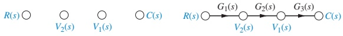
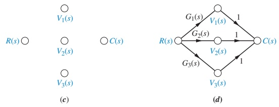
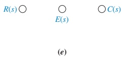
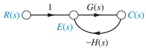
FIGURE 5.18 – Building signal-flow graphs for cascade, parallel, and feedback forms.
Example 5.6 – Complex Block Diagram → Signal-Flow Graph
Convert Figure 5.11 (from Example 5.2) into a signal-flow graph.
- Draw all signal nodes \(V_1(s), V_2(s), \dots\) etc.
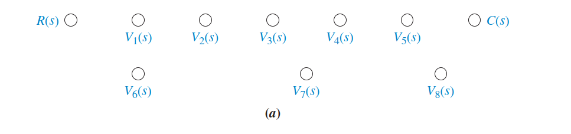
- Connect them with branch gains \(G_i(s), H_i(s)\), including negative gains where appropriate.
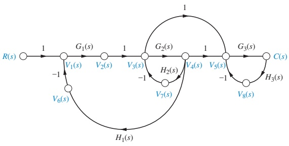
- Optionally, simplify by removing nodes that only have one incoming and one outgoing branch (series combination).
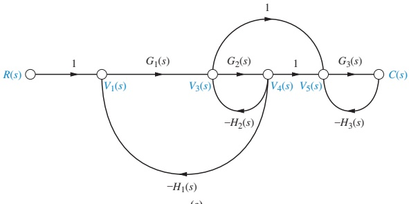
FIGURE 5.19 – Signal-flow graph development from Figure 5.11.
5.5 Mason’s Rule – Transfer Function from a Signal-Flow Graph
Mason’s Rule gives the transfer function \(C(s)/R(s)\) directly from a signal-flow graph:
\[ G(s) = \frac{C(s)}{R(s)} = \frac{\displaystyle\sum_{k} T_k \Delta_k}{\Delta} \]
Where:
\(T_k\): the k‑th forward-path gain from input node to output node.
\(\Delta\): the overall determinant of the graph, defined by:
\[ \Delta = 1 - \sum (\text{individual loop gains}) + \sum (\text{products of loop gains in all nontouching loop pairs}) - \sum (\text{products of loop gains in all nontouching triplets}) + \dots \]
\(\Delta_k\): same as \(\Delta\), but excluding all loops that touch the k-th forward path.
Key definitions:
- Loop: a path that starts and ends at the same node without visiting any node more than once.
- Loop gain: product of branch gains around a loop.
- Nontouching loops: loops that share no nodes in common.
Caution
The hardest parts of Mason’s Rule are:
- Enumerating all loops.
- Correctly identifying nontouching loop combinations.
Visualizing Loops and Forward Paths
- Forward path: \(R \to G_1 \to G_2 \to G_3 \to C\).
- Loops:
- Around \(X\) and \(Y\) via \(H_1(s)\).
- Around \(Y\) and \(C\) via \(H_2(s)\).
Use this simple structure to practice identifying loops and nontouching loops.
Example 5.7 – Mason’s Rule in Action
Problem: Find \(C(s)/R(s)\) for the signal-flow graph in Figure 5.21.
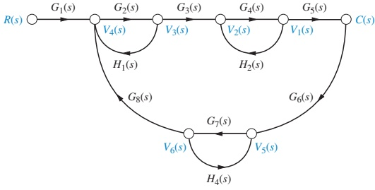
Example 5.7 – Step 1: Forward Path
There is one forward path:
- From input \(R(s)\) to output \(C(s)\).
Forward-path gain:
\[ T_1 = G_1(s) G_2(s) G_3(s) G_4(s) G_5(s) \]
Example 5.7 – Step 2: Identify Loop Gains
From the graph, four loops:
\[ L_1 = G_2(s) H_1(s) \]
\[ L_2 = G_4(s) H_2(s) \]
\[ L_3 = G_7(s) H_4(s) \]
Large loop through many branches: \[ L_4 = G_2(s)G_3(s)G_4(s)G_5(s)G_6(s)G_7(s)G_8(s) \]
Example 5.7 – Step 3: Nontouching Loops
Check which loops do not share nodes:
- Loop 1 (through \(G_2,H_1\)) does not touch loop 2 (through \(G_4,H_2\)).
- Loop 1 does not touch loop 3 (through \(G_7,H_4\)).
- Loop 2 does not touch loop 3.
- All of 1,2,3 touch loop 4.
Thus, nontouching loop products taken two at a time:
\[ L_1 L_2 = G_2H_1G_4H_2 \]
\[ L_1 L_3 = G_2H_1G_7H_4 \]
\[ L_2 L_3 = G_4H_2G_7H_4 \]
And one triple of nontouching loops:
- Loops 1, 2, and 3: \[ L_1 L_2 L_3 = G_2H_1G_4H_2G_7H_4 \]
No higher-order combinations.
Example 5.7 – Step 4: Compute Δ and Δ₁
Overall \(\Delta\):
\[ \begin{aligned} \Delta = & \;1 - \big[ L_1 + L_2 + L_3 + L_4 \big] \\ & + \big[ L_1L_2 + L_1L_3 + L_2L_3 \big] \\ & - \big[ L_1L_2L_3 \big] \end{aligned} \]
Explicitly:
\[ \begin{aligned} \Delta = & \;1 - \big[ G_2H_1 + G_4H_2 + G_7H_4 \\ & \quad + G_2G_3G_4G_5G_6G_7G_8 \big] \\ & + \big[ G_2H_1G_4H_2 + G_2H_1G_7H_4 + G_4H_2G_7H_4 \big] \\ & - \big[ G_2H_1G_4H_2G_7H_4 \big] \end{aligned} \]
Next, \(\Delta_1\) for the only forward path.
- Remove from \(\Delta\) any loops that touch the forward path nodes.
- From the figure, only loop 3 (with \(G_7H_4\)) does not touch the forward path.
So:
\[ \Delta_1 = 1 - G_7(s)H_4(s) \]
Example 5.7 – Step 5: Final Transfer Function
Apply Mason’s formula:
\[ G(s) = \frac{C(s)}{R(s)} = \frac{T_1 \Delta_1}{\Delta} = \frac{[G_1G_2G_3G_4G_5]\,[1 - G_7H_4]}{\Delta} \]
Skill-Assessment Exercise 5.4 – Mason vs. Block Reduction
Problem: Use Mason’s Rule to find the transfer function of the signal-flow graph of Figure 5.19(c).
- This is the same system as Example 5.2, reduced by block diagram algebra.
Answer:
\[ T(s) = \frac{G_{1}(s)G_{3}(s)\big[1 + G_{2}(s)\big]}% {\big[1 + G_{2}(s)H_{2}(s) + G_{1}(s)G_{2}(s)H_{1}(s)\big]\big[1 + G_{3}(s)H_{3}(s)\big]} \]
Note
This demonstrates that:
- Block diagram reduction and Mason’s Rule are equivalent ways to get the same transfer function.
- You can pick whichever is more convenient for a given problem.
Summary / Key Points
- Block diagrams model interconnections of subsystems via blocks, summing junctions, and pickoffs.
- Three key interconnection types:
- Cascade: multiply transfer functions (if no loading).
- Parallel: sum transfer functions.
- Feedback: \(G_{\text{CL}}(s) = \dfrac{G}{1 \pm GH}\).
- Block moves (across summing junctions and pickoffs) are essential to:
- Expose familiar forms.
- Systematically reduce complex diagrams.
- Feedback systems often reduce to second-order forms; then:
- Step response specs (%OS, \(T_s\), \(T_p\), etc.) are set by \(\zeta, \omega_n\).
- We can design gain \(K\) to meet transient performance requirements.
- Signal-flow graphs:
- Nodes = signals, branches = transfer functions.
- Make summing implicit, fit naturally with state-space.
- Mason’s Rule:
- Provides \(C/R\) in one formula from a signal-flow graph.
- Requires careful identification of loops and nontouching loops.
- Both block diagram reduction and Mason’s Rule ultimately yield the same transfer function.
Summary of Key Formulas
Cascade
For cascade of independent subsystems (no loading):
\[ G_e(s) = G_n(s) G_{n-1}(s)\dots G_2(s)G_1(s) \]
Parallel
For parallel subsystems with same input and algebraically summed outputs:
\[ G_e(s) = \pm G_1(s) \pm G_2(s) \pm \dots \pm G_n(s) \]
Feedback
Closed-loop transfer function (general feedback):
\[ G_e(s) = \frac{G(s)}{1 \pm G(s)H(s)} \]
- Use \(+\) in denominator for negative feedback.
Second-Order Standard Form
Transfer function:
\[ T(s) = \frac{\omega_n^{2}}{s^{2} + 2\zeta\omega_n s + \omega_n^{2}} \]
Relationships:
- \(\omega_n = \sqrt{\text{constant term}}\).
- \(2\zeta\omega_n = \text{coefficient of } s\).
Key transient formulas (for underdamped, \(0<\zeta<1\)):
Percent overshoot: \[ \%OS = e^{-\zeta\pi / \sqrt{1-\zeta^{2}}} \times 100 \]
Peak time: \[ T_p = \frac{\pi}{\omega_n\sqrt{1-\zeta^{2}}} \]
Settling time (2% criterion): \[ T_s = \frac{4}{\zeta\omega_n} \]
Mason’s Rule
Overall transfer function:
\[ G(s) = \frac{C(s)}{R(s)} = \frac{\displaystyle\sum_{k} T_k \Delta_k}{\Delta} \]
Where:
\(T_k\) = k-th forward-path gain.
\(\Delta = 1 - \sum L_i + \sum L_iL_j - \sum L_iL_jL_k + \dots\)
- \(L_i\) = individual loop gains.
- Terms are products of nontouching loop gains with alternating signs.
\(\Delta_k = \Delta\) with all loops touching the k-th forward path removed from the expression.
Interactive Deck
Live Practice: Cascade of Subsystems (No Loading)
Modify the transfer functions and see how the equivalent cascade behaves.
Live Practice: Parallel Combination
Experiment with a parallel combination of two subsystems and see their algebraic sum.
Interactive: Closed-Loop Gain from G and H
Play with forward-path and feedback gains and see the closed-loop gain.
We use the standard form:
\[ G_{\text{CL}}(s) = \frac{G(s)}{1 + G(s)H(s)} \]
(assuming negative feedback).
Reactive: Overshoot vs. Damping Ratio ζ
Use the slider to change damping ratio \(\zeta\), and observe the predicted percent overshoot of a standard second-order system.
Reactive: Second-Order Step Response (ζ, ωₙ Sliders)
Explore how changing \(\zeta\) and \(\omega_n\) changes the step response of a standard second-order closed-loop system:
\[ T(s) = \frac{\omega_n^2}{s^2 + 2\zeta\omega_n s + \omega_n^2} \]
Reactive: Design K for 10% Overshoot (Example 5.4)
Here we revisit Example 5.4 interactively.
Recall:
\[ T(s) = \frac{K}{s^{2} + 5s + K} \]
For a 10% overshoot, we want \(\zeta \approx 0.591\). Use the slider to choose K and see the resulting ζ and %OS.
Reactive: Mason’s Rule – Simple Two-Loop Example
Consider a simple signal-flow graph with:
- Forward path gain \(T_1 = G_1 G_2\).
- A single feedback loop with loop gain \(L_1 = G_2 H\).
For this simple case, Mason’s rule gives:
\[ \Delta = 1 - L_1, \quad \Delta_1 = 1, \quad G(s) = \frac{T_1 \Delta_1}{\Delta} = \frac{G_1 G_2}{1 - G_2 H} \]
Use sliders to change \(G_1, G_2, H\) and observe the resulting transfer function.
Live Practice: Simple Block Moves as Algebra
Treat moving a gain G across a summing junction like factoring in algebra.
Consider:
\[ C(s) = G\big(R(s) - X(s)\big) \quad \text{vs.} \quad C(s) = GR(s) - GX(s) \]